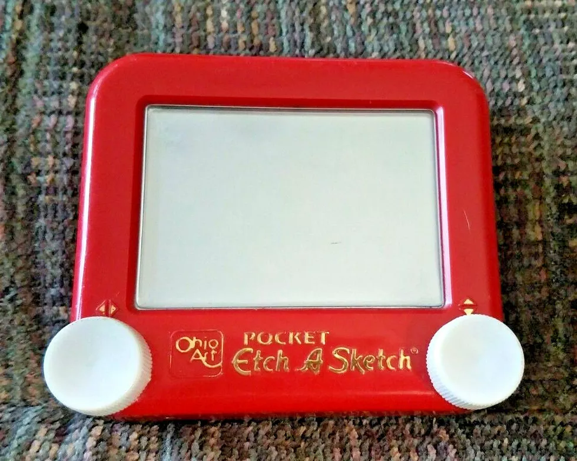

Magic
Etch A Sketch
Screen
Enter a number ranging from 2 to 75. This number sets how many rectangles each row and column of the drawing frame will have. The more rectangles on the frame, the more detailed the things you draw can be!
French electrical technician André Cassagnes applied his experience with the clinging properties of an electrostatic charge to invent a mechanical drawing toy with no spare parts. He called his creation L’Ecran Magique, the magic screen.
Introduced at the International Toy Fair in Nuremberg, Germany, in 1959, the gadget failed to draw much attention. Numerous manufacturers passed over a chance to pick up the new toy, concluding that Cassagnes wanted too much money for it. However, the Ohio Art Company took a second look and invested $25,000, more than they had ever paid for a license. Ohio Art renamed the toy “Etch A Sketch” and began mass production later that year. Saturation advertising on television turned the toy into a must-have item for Christmas, 1960, and Ohio Art’s factory worked feverishly until noon that Christmas Eve. Etch A Sketch has changed little since then.
Static charges hold a mixture of aluminum powder and tiny plastic beads to the inside of a clear plastic screen. Knobs control the horizontal and vertical rods that move a stylus where the two meet. The point scores a line across the screen’s reverse side. Experts can draw a curved or diagonal line. Turning the screen over and giving it a shake erases the picture.
Click on one of the buttons on the Etch A Sketch and start hovering over the drawing frame. The currently active button is smaller than the others (because it's being pressed). Alternatively, you can press the keys "b"/"g"/"r"/"e"/"c" while your cursor is over the canvas and the active button will change as well.
The random 🌈 mode is special: it'll color the target rectangle a random color.
Have fun!